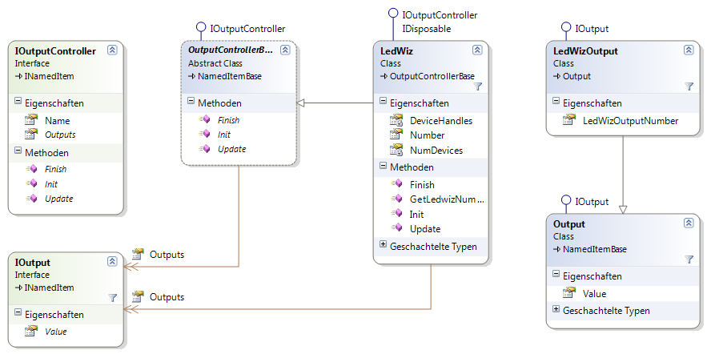

- Warning
- This page is fully not up to date!
Introduction
Output controllers are devices like the Ledwiz, PacLed64 or maybe your own Arduino or Raspberry PI invention controlling one or several physical outputs in a cabinet.

By providing interfaces for the outputcontroller itself (IOutputController) and for the outputs of a outputcontroller (IOutput) it is possible to support different output controllers. Since all outputs of output controllers have to implement IOutput any configured toy can use any configured output of any output controller in the system.
Builtin output controllers
A list of supported output controllers, including configuration examples and details, can be found on the following page: Built in OutputControllers.
Interfaces for output controllers
IOutputController interface
All output controllers need to implement the interface IOutputController to allow the DirectOutput framework to use the output controller. The IOutputController interface inherits the INamedItem interface, so the members of this interface have to be implemented as well.
A good starting point for your own implementation of a output controller is the abstract OutputControllerBase class. OutputControllerBase implements the INamedItem interface by inheriting NamedItemBase and also the Outputs property of the IOutputController interface. The simplest implemention of a output controller is probably the NullOutputController which is part of the framework.
Here is a short explanation of the interface members of IOutputController:
- string Name { get; set; }
Must set or get the name of the output controller. If the value of the name property is changed the BeforeNameChange and AfterNameChange events have to fire. OutputControllerBase does implement this member (inherited from NamedItemBase).
- event EventHandler<NameChangeEventArgs> BeforeNameChange
This event has to be fired before the value of the Name property gets changeds. OutputControlledBase is implementing this event (inherited from NamedItemBase).
- event EventHandler<NameChangeEventArgs> AfterNameChanged
Event has to be fired after the value of the Name property has changed. OutputControlledBase is implementing this event (inherited from NamedItemBase).
- OutputList Outputs { get; set; }
This property contains the list of outputs (objects implementing IOutput) of a output controllers. Property is implement in the OutputControllerBase class, but can be overwritten.
- void Init()
Method to initialize the output controller. This is the first method which is classed on a output controller after it has been instanciated.
- void Update()
This method is called by the framework after data received from the outside world (typically PinMame) has been processed or after the UpdateTime has fired, to tell the output controller to update its physical outputs. If updating the physical outputs involves some time lag (very likely it does), consider doing the actual update in a separate thread and only to use this method to signal the updater thread, that data is ready.
- void Finish()
Finish is the last method which is called on a output controller, before the object gets discared. Do all necessary cleanup work in this method and make sure all physical outputs are turned off.
Please have a look at the class documentations for more information on the interface and its implementation.
IOutput interface
Output controllers implement the property Outputs which contains a list of the outputs of the output controller. This list can contain objects implement the IOutput interface.
The class Output is a full implementation of the IOutput interface and can be used directly for your output controller implementation or can be inherited to create your own extended IOutput implementation (e.g. having a additional output number property).
The IOutput interface has the following members:
- string Name { get; set; }
Must set or get the name of the output. If the value of the name property is changed the BeforeNameChange and AfterNameChange events have to fire. The Output class does implement this member (inherited from NamedItemBase).
- event EventHandler<NameChangeEventArgs> BeforeNameChange
This event has to be fired before the value of the Name property gets changeds. The Output class is implementing this event (inherited from NamedItemBase).
- event EventHandler<NameChangeEventArgs> AfterNameChanged
Event has to be fired after the value of the Name property has changed. The Output class is implementing this event (inherited from NamedItemBase).
- byte Value { get; set; }Property getting and setting the value of a output. A typical implementation of a output controller will use the value of this property to set the value of the physical output within its Update method (or updater thread). Make sure your implementation supports the whole value range (0-255) of the property (e.g. if you have a digital output supporting only on and off, map 0 to off and all other values to on).
- event Output.ValueChangedEventHandler ValueChanged
This event has to fire if the Value property of the output has changed.
Implementation guidelines for custom output controllers
- All output controllers must implement the IOutputController interface. This interface specifies some methods and properties which will allow the framework to identify and use the output controller.
- If a output controllers uses its own output class, this class must implement the IOutput interface.
- Try to inherit the OutputControllerBase class. This abstract class does already implement some functionality required for your own output controller class.
- Define a globaly unique name (not only unique within its namespace) for your output controller (if the name is not unqiue loading or saving the configuration will probably fail) and put it in a subnamespace of DirectOutput.Cab.Out (e.g. DirectOutput.Cab.Out.MyOutputController).
- Ensure that your output controller class is XMLSerializable. As a rule of thumb, your class must implement a paramaterless constructor and all settings for the effect have to be available through public read and write enabled properties. If your output controller is not XMLserializeable by default implement the IXMLSerializable interface to ensure that the config for the controller can be loaded and saved.
- Be fault tolerant and handle all errors that eventually occur.
- Keep your code as fast as possible. Updates on output controllers can occur often and slow code will slow down the whole framework.
- Put the update logic for your output controller in a separate thread, so all time consuming calls to functions talking to the outside world are isolated from the rest of the framework (use the Init and the Finish methods to start/stop your own thread). Use the Update method only to signal the updater thread that new data is available.
- Comment your code! At least the public methods and properties of your output controller class should be properly documented with XML comments (check the source code of DOF to see what is expected).

 1.14.0
1.14.0